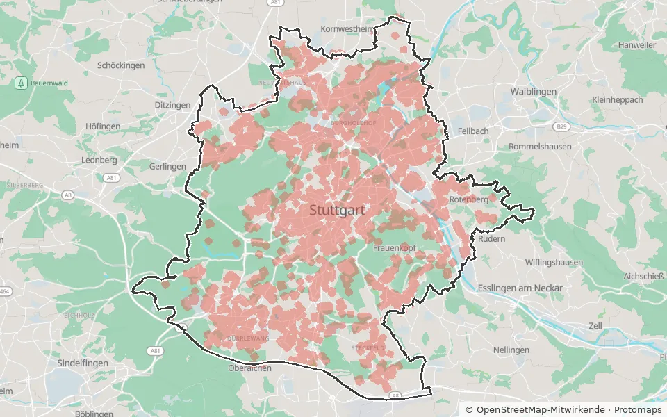
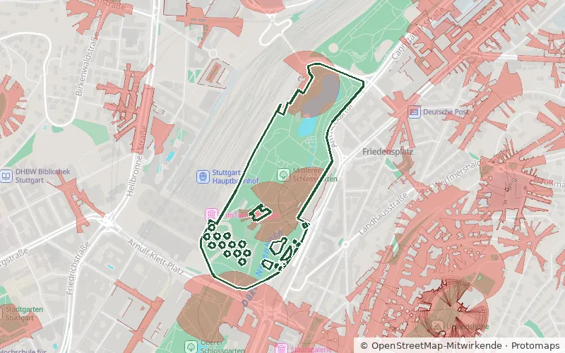
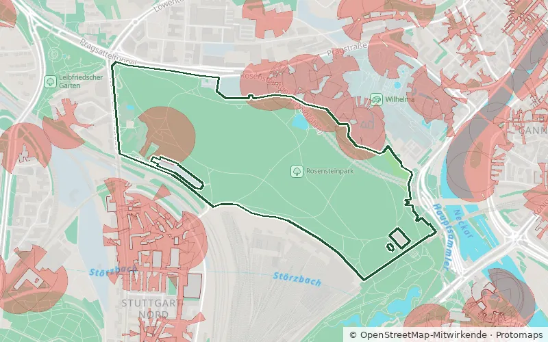
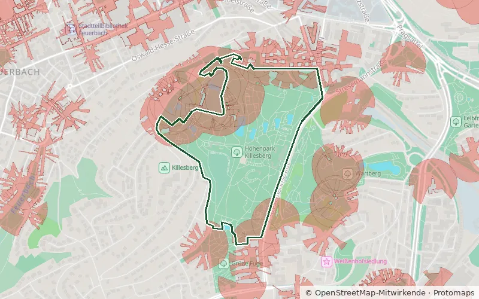
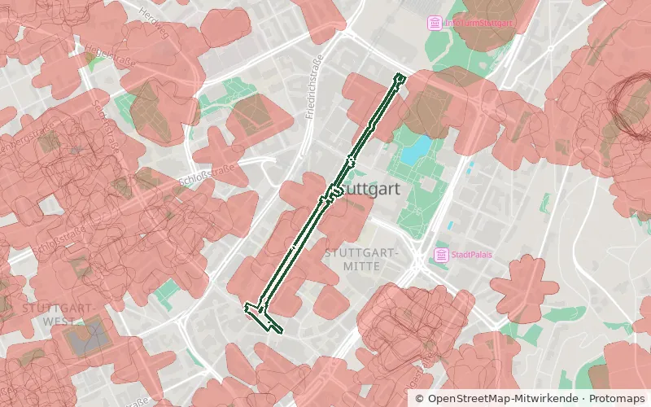
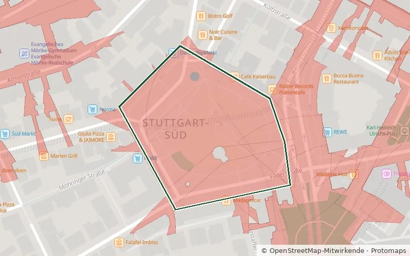
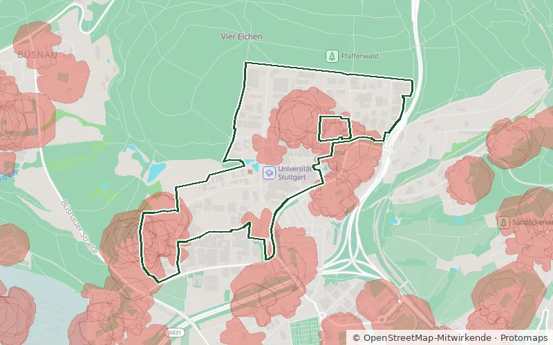

In Stuttgart ist öffentliches Kiffen auf 42 km² verboten, das sind 20,4 % der Stadtfläche von 207 km². Grund sind 2 984 Einrichtungen wie Schulen und Spielplätze: In ihrer Sichtweite, bis 100 Meter vom Eingang und ohne Gebäude dazwischen, verbietet § 5 KCanG den Konsum. Dazu kommen die Fußgängerzonen von 7 bis 20 Uhr und überall die Gegenwart von Minderjährigen.
26 % der Stadtfläche sind Wald, an den Hängen rund um den Talkessel und am Stadtrand; dort liegen nur 9,0 % in einer Zone. Ohne den Wald gerechnet sind es 24,4 %.

Woher die Zonen kommen
| Einrichtung | Anzahl | Zonenfläche |
|---|---|---|
| Schulen | 269 | 8,9 km² |
| Kitas und Kindergärten | 379 | 7,7 km² |
| Kindertagespflege | 55 | 0,9 km² |
| Spielplätze | 923 | 18,3 km² |
| Kinder- und Jugendeinrichtungen | 48 | 1,0 km² |
| Sportstätten | 1 309 | 21,0 km² |
| Anbauvereinigungen | 1 | unter 0,1 km² |
Jede Art für sich gezählt, Überlappungen also mehrfach. Anbauvereinigungen nur, soweit in OpenStreetMap eingetragen.
Die meisten Zonen gehen auf die 1 309 Sportstätten zurück, danach auf die 923 Spielplätze.
Von den Anbauvereinigungen hatte das Land bis Juni 2025 eine in Stuttgart erlaubt, in Weilimdorf; wo sie anbaut, ist nicht veröffentlicht (Landtag, Drucksache 17/8893).
Schlossgarten und Parks
Der Mittlere Schlossgarten liegt zu 35 % in einer Zone, der Untere Schlossgarten zu 30 %; die Zonen kommen vor allem von Spielplätzen, Kitas und Sportanlagen am Rand. Der Schlossgarten gehört dem Land. Nach Auskunft des Finanzministeriums von 2024 ist Kiffen dort erlaubt, mit wenigen Ausnahmen, die es nicht nannte; eine veröffentlichte Parkordnung haben wir nicht gefunden (Stuttgarter Zeitung, April 2024).

Im Rosensteinpark sind es nur 12 %, im Höhenpark Killesberg 37 %, wegen der vielen Spielplätze, Kitas und Sportanlagen im und am Park.


Auf einem 100 Meter breiten Streifen Land entlang des Neckars liegen 24 % in einer Zone.
Innenstadt und Plätze
Eine amtliche Liste der Stuttgarter Fußgängerzonen haben wir nicht gefunden. Die Stadt zählt in ihrem Merkblatt für Straßenmusik unter anderem die untere Königstraße, den Schlossplatz am Fahnenrondell, den Kronprinzplatz, den Mailänder Platz und die Marienstraße zur „Fußgängerzone der Stuttgarter Innenstadt“ (Stadt Stuttgart). Ob am Schlossplatz, der dem Land gehört, die Regel für Fußgängerzonen gilt, wollte das Land 2024 noch klären; eine Antwort haben wir nicht gefunden. In der Fußgängerzone gilt von 7 bis 20 Uhr Konsumverbot; blau sind die Fußgängerbereiche aus OpenStreetMap.
Von der Königstraße liegen außerdem 25 % in einer Sichtweiten-Zone, vom Schlossplatz 18 %, von der Calwer Straße 9 %. Der Marienplatz im Süden liegt fast ganz in einer Zone (99 %): Auf dem Platz sind ein Spielplatz und eine Sportanlage. Der Feuersee liegt zu 74 % in einer Zone, der Eckensee vor der Oper zu 0 %.


Hochschulen
Hochschulen sind nach § 5 KCanG keine Verbotsorte. Auf dem Campus der Universität Stuttgart in Vaihingen liegen trotzdem 22 % in einer Zone: Elf Sportanlagen, drei Spielplätze und drei Kitas liegen auf dem Gelände. Die Hausordnung der Universität verbietet das Rauchen in Gebäuden (Universität Stuttgart). In den Wohnheimen des Studierendenwerks sind Anbau und Konsum von Cannabis in Gemeinschaftsräumen und Grünanlagen verboten (Hausordnung Studierendenwerk).

Wasen und andere Feste
Auf dem Cannstatter Wasen ist Kiffen beim Volksfest und beim Frühlingsfest auf dem ganzen Gelände verboten; das steht in der Benutzungsordnung des Veranstalters, wer dagegen verstößt, muss das Gelände verlassen (Benutzungsordnung). In der MHPArena verbietet die Stadionordnung, Cannabis mitzubringen und zu konsumieren, auch auf den Vorflächen und Parkplätzen (MHPArena).
Was sonst noch gilt
Seit Juni 2026 ist gerauchtes Cannabis in Baden-Württemberg auch auf Spielplätzen, Schulgeländen und Kita-Grundstücken, an allen Haltestellen und in Freibädern und Zoos verboten, also auch in der Wilhelma, bis zu 200 Euro (Land Baden-Württemberg). Auf Spielplätzen verbietet die Polizeiverordnung der Stadt schon den Aufenthalt unter dem Einfluss berauschender Mittel, mit Geldbuße bis 5.000 Euro (Polizeiverordnung, § 3); die Grünflächensatzung verbietet dort außerdem das Rauchen (Grünflächensatzung, § 5).
Einen Bußgeldkatalog für das Cannabisgesetz hat das Land nicht; das Gesetz erlaubt bis zu 30.000 Euro. Eigene Verbotszonen für Cannabis hat Stuttgart nicht (Stand 26. November 2026).
Häufige Fragen
Wo darf man in Stuttgart kiffen?
Nach § 5 KCanG außerhalb der roten Flächen, etwa in weiten Teilen des Rosensteinparks (12 % in einer Zone). Tagsüber nicht in den Fußgängerzonen, nie in Gegenwart von Minderjährigen, nicht gegen ein Hausrecht wie auf dem Wasen, gerauchtes Cannabis außerdem nicht an Haltestellen, auf Spielplätzen, Schulgeländen und in Freibädern. Weiß heißt nicht sicher erlaubt: Hecken, Bäume und fehlende Einrichtungen kennt die Karte nicht.
Darf man im Schlossgarten kiffen?
Auf dem größten Teil liegt keine Sichtweiten-Zone, und nach Auskunft des Landes von 2024 ist es dort grundsätzlich erlaubt. Rot sind die Bereiche um Spielplätze und Sportanlagen; in Gegenwart von Kindern und Jugendlichen gilt das Verbot überall.
Wie genau ist das?
Täglich aus OpenStreetMap gerechnet, mit Gebäuden als Sichthindernis; die Zahlen hier sind vom 26. November 2026. Eine Orientierungshilfe, keine Rechtsauskunft (wie gerechnet wird).
Fehlt eine Einrichtung? Korrekturen in OpenStreetMap stehen am Tag darauf auf der Karte; bitte nur eintragen, was es vor Ort gibt.